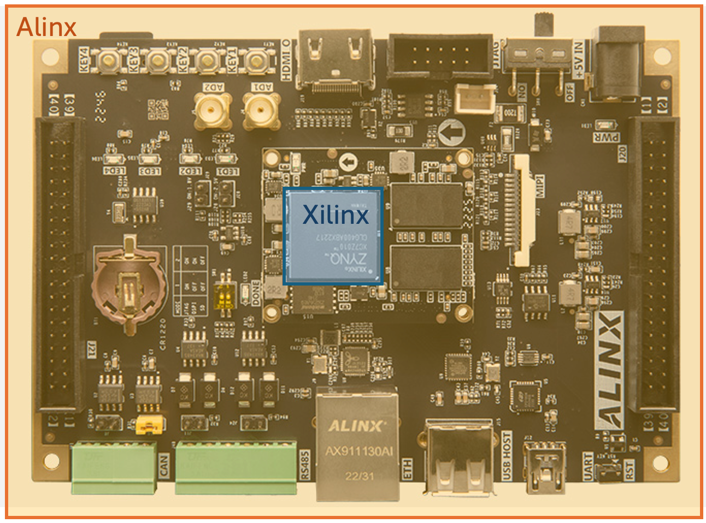
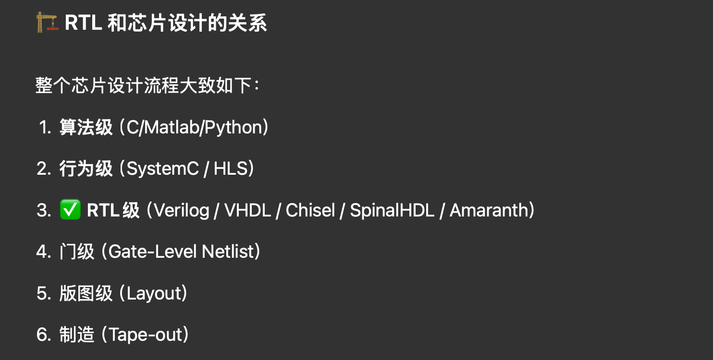
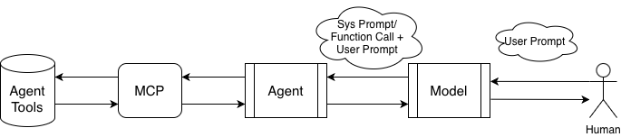
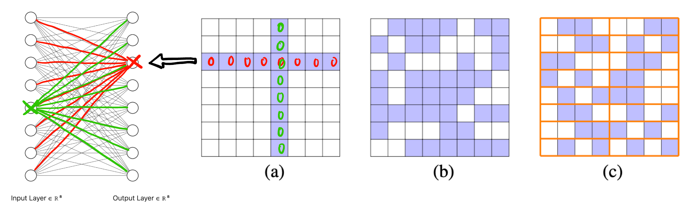
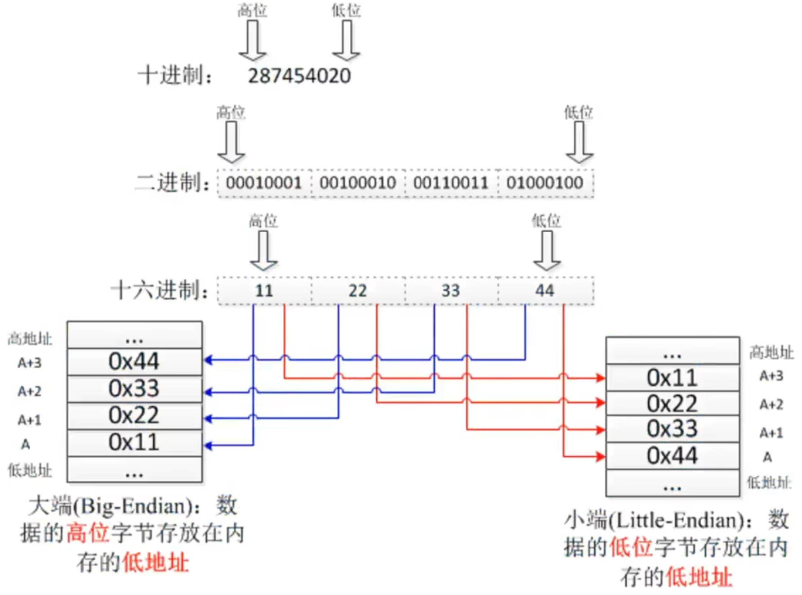
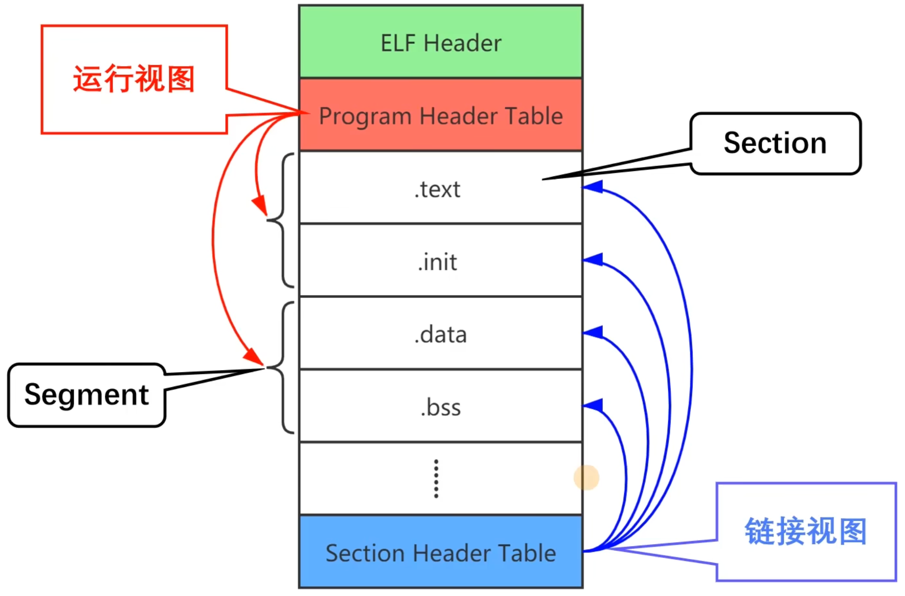
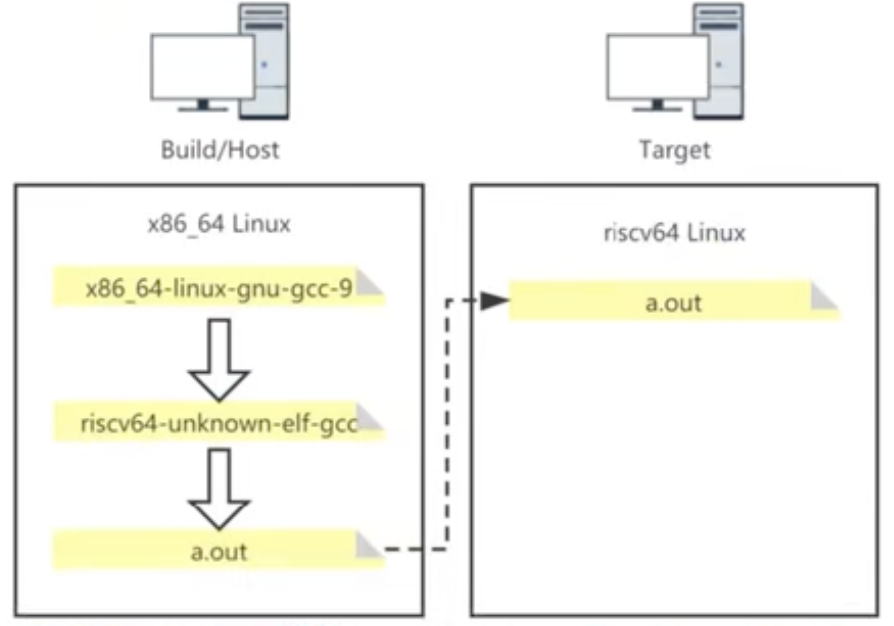
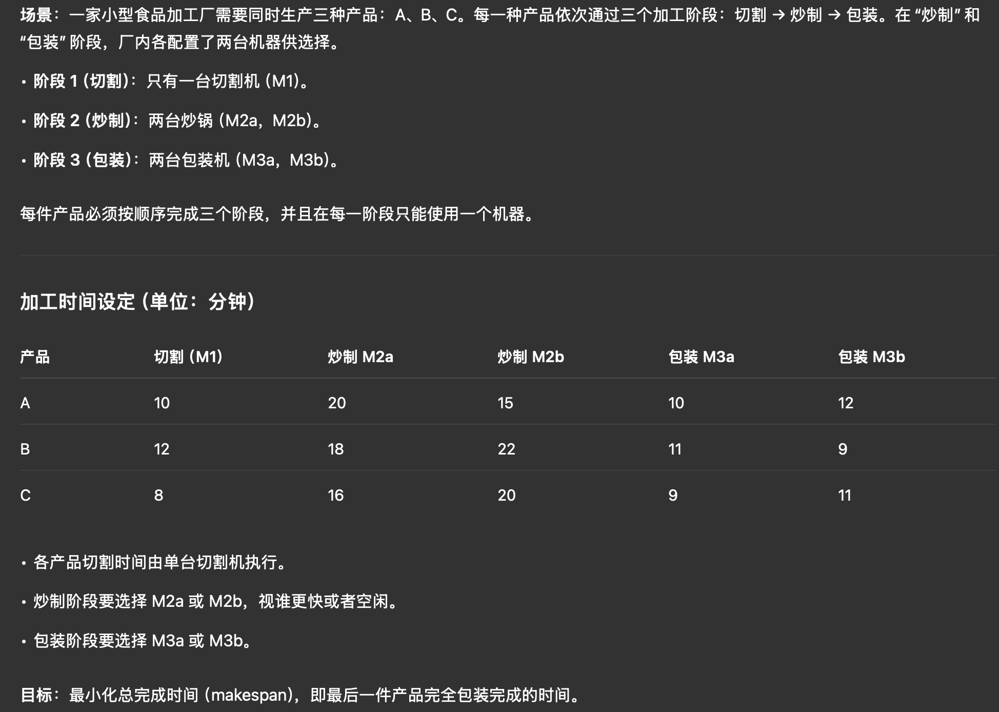

Glossary 名词解释
Glossary is important and irrelevant at the same time.
NOTE: 笔者之所以不把所有 Terms 放在相应的章节里面讲而是列举在这里的动机主要是 很多概念比较基础, 并且对 big picture 影响不大. 需要展开解释的概念我会放 hyperlink.
General Terms
CFU: Custom Function Unit (自定义功能单元). 为 ML 某些耗时的计算 (如卷积、矩阵乘法、位操作等) 定制的指令加速硬件模块.
- 一旦主处理器执行到特定的 CFU 指令，就会将数据发送给 CFU 处理，然后 CFU 返回结果.
- FPU: Floating Point Unit (浮点运算单元), 是 CPU 中专门处理浮点数运算的硬件组件.
Git LFS: Git Large File Storage. 解决了 github 不能上传大文件的问题. 使用:
sudo apt-get install git-lfs git lfs install # 在项目目录中初始化 Git LFS git lfs pull # 下载实际文件然后原来的文件的格式就会从文本格式变为真正的 ZIP 文件, 可以通过下面的命令查看:
file test.zip # 返回
FPGA Terms
General
TfLM: TensorFlow Lite for Microcontrollers.
- PDTI8: Person DeTection Int 8
Gateware: 用软件编写的硬件电路. (既不是 Software, 也不是 Hardware).
HPS: High Performance System.
PLATFORMS=common_soc sim hps, 三个平台.common_soc指标准的 FPGA 开发平台;sim指用 Verilator 进行软件仿真.
SoC (System on Chip) FPGA 片上系统: 比如 ZYNQ 有 PL 和 PS, 一块硅芯片 就可以实现整个系统的功能 (而不是要组合多个芯片 (Chiplet)). 有时 Chiplets 组成的系统也叫 SoC, 但严格来说 SoC 是指单芯片系统.
ACAP (Adaptive Compute Acceleration Platform): 集成了专用 AI 引擎／DSP阵列、Network-on-chip (NoC)、高带宽存储接口 (如 HBM) 等异构硬件资源 [1], 如 Xilinx Versal 系列.
IP Core: Intellectual Property Core. 由一方 (开发者或公司) 设计，并通过许可授权给其他设计者使用。常见的 IP 核包括 CPU 内核、以太网控制器、内存控制器等.
- Soft IP: 软核
- Hard IP: 硬核
.vcd,fst: 波形文件格式, 后者占空间更小, 但只受 GTKWave 支持 [2].
Interface
PMOD (Peripheral Module) 接口: 一组 2*6 排针的引脚 PMOD. 定义了电源、地线、以及最多 8 条可用于通信的信号线. PMOD模块通常通过 SPI、I2C 或 GPIO (通用数字输入输出) 与主控通信. 你可以买到很多支持 PMOD 的模块, 如传感器、显示屏、存储器等.
JTAG 接口: 一种用于调试和编程的标准接口.
AXI (Advanced eXtensible Interface) 接口: CPU 与外设 (内存控制器, DMA, CFU, IP 核) 之间的通信协议.
- 比如 ZYNQ 的 PS (Processing System) 和 PL (Programmable Logic) 之间的通信就是通过 AXI 接口 (见 FPGA 原理速成).
ZYNQ
- 核心商业模式:
- IP 提供商: 设计 IP 核并授权给芯片设计制造商使用. E.g., ARM (CPU 内核设计)
- 芯片设计制造商: 购买 IP 核并设计和生产关键芯片. E.g., Xilinx (被 AMD 收购), ST (STM32 核心芯片的制造商).
- 开发板制造商: 从芯片设计制造商处采购芯片, 并设计供电电路、时钟电路、将方形黑色的芯片底部的引脚引出接入各种物理接口、设计 PCB 等, 最终生产出开发板. E.g., Alinx, 正点原子, Digilent.
- 命名规则
- E.g., ZYNQ XC7Z010 CLG400ABX2021 D6168711A, XC7: 7 系列 (Xilinx Corporation), Z: ZYNQ, 010: 逻辑资源规模 (越小越少), CLG: 封装类型 (Chip-Scale Lead-Free BGA (Ball Grid Array)), 400: 引脚数, ABX: 温度、性能等级, 2021: 生产年份, D6168711A: 可理解为序列号.
- ZYNQ 7010 SoCs 包括 XC7Z010 等很多型号.

APU (Application Processing Unit): ZYNQ PS 内部的一个双核 ARM Cortex-A9 CPU. (就是 CPU, 见 FPGA 原理速成)
MIO (Multiplexed I/O): ZYNQ PS 黑色芯片里面有多种外设: SPI, IIC, CAN, UART, etc. 比如 UART 主要涉及 TX 和 RX 两类信号, 这两类信号需要通过 MIO 与用户交互. 但是 BGA 封装出来的引脚很少 (XC7 只有 54 根), 需要进行复用.
- EMIO (Extended MIO): 先要通过 PL 再与用户交互.
GIC (Generic Interrupt Controller): 通用中断控制器, 收集外设、PL 发来的中断请求, 按优先级分配给 APU 中的两个核. 相当于 STM32 里面的 NVIC (Nested Vectored Interrupt Controller), 只不过 NVIC 只需要给到一个核.
File formats
.pcf文件: Physical Constraints File..pcf文件告诉工具：Verilog 中的某个逻辑信号，物理上应该接到 FPGA 的哪个 pin. 比如:set_io D1 B5表示把
D1(在.v文件中定义的) 信号连接到 FPGA 的 B5 引脚..xdc文件: Xilinx Design Constraints File (Vivado 工具使用的约束文件, a.k.a., Master Constraints File 主约束文件). Arty 35T xdc 文件
.vmem文件: Verilog Memory File. 存放测试时 FPGA RAM/ROM 中的初始数据, 然后 testbench 文件会读取这个文件并将数据加载到 FPGA 内存中. 格式如下:@00000000 // 32位地址：0x00000000 00010203 // 地址0x00000000 的内容：0x00010203 04050607 // 地址0x00000004 的内容：0x04050607 08090A0B // 地址0x00000008 的内容：0x08090A0B @00000010 // 跳转到地址0x00000010 FFFFFFFF // 地址0x00000010 的内容：0xFFFFFFFF
HDL
HLS: High-Level Synthesis. 用 C/C++ 等高级语言来写硬件电路设计.
- Scala (Scalable language): 一种专门生成其它 DSL (Domain Specific Language) 的语言. 生成的语言包括:
- SpinalHDL: 一种 Hardware Description Language (HDL). 可用来生成更底层的 Verilog 代码.
- VexRiscv Soft CPU: 用 SpinalHDL 写的一个 高度可配置的 RISC-V soft CPU 内核 (soft 的意思就是 CPU 不是硬件焊死的 (“hard CPU”) , 而是部署在 FPGA 上可以改变结构的).
- Chisel: 另一种 HDL.
- Scalac: Scala 编译器.
- sbt: Scala Build导出 Tool. 配置依赖、插件和调用 scalac. 会在指定目录下面生成
.v或.sv文件.- FIRRTL (Flexible Intermediate Representation for RTL,
.fir): 一种用于硬件设计的中间表示 (加上--dump-fir选项即可,dump一般表示「导出」). 可由 Chisel 生成, 然后再转换为 Verilog.- ChiselStage: Chisel 的一个组件, 将 Chisel 转换为 FIRRTL.
- Firtool: 将 FIRRTL 转换为 Verilog.
- FIRRTL (Flexible Intermediate Representation for RTL,
- Mill: 跟 sbt 类似, 但更轻量.
- SpinalHDL: 一种 Hardware Description Language (HDL). 可用来生成更底层的 Verilog 代码.
- Amaranth: 一个 Python 库, 也是用于硬件描述和设计. 可生成 Verilog 代码.
- Scala (Scalable language): 一种专门生成其它 DSL (Domain Specific Language) 的语言. 生成的语言包括:
RTL (Register Transfer Level): 通俗说就是 verilog 代码. 可视为芯片设计的前端.
Figure 1
FPGA Principles
- PAR： Place and Route. 布局布线.
FPGA Structure 结构
BLE, CLB (Slice, LAB, ALM), SB: 见 FPGA 原理速成.
LUT (Look-Up Table): 查找表. 所有写
Verilog的行为一般都会被综合成 LUT + FF 的结构.DSP (Digital Signal Processing) Block: FPGA 上专门进行数值运算 (乘加) 的硬件模块 (是卷积、矩阵乘法核心).
- LUT-based DSP: 与 DSP Block 有本质的区别, 综合器会把它看成 LUT + FF 结构, 而不是调用板子上的 DSP Block 硬件资源.
Verification 验证
验证是芯片设计很重要的一环, 下面将简要介绍 Verification 的一些概念, 遵循认识论原则.
DUT: Device Under Test. 被测试的模块.
TB (Testbench): 狭义来说就是用
verilog写的测试代码 (initial begin之类的). 但写过都知道有以下缺点:- 基本上只能验证模块的功能正确性.
- 输入什么信号都要自己写, 很费时, 而且缺乏随机性.
UVM (Universal Verification Methodology): 验证方法学.
Smoke Test 冒烟测试: 最基础耗时最短的测试, 软件的话就是能跑就行, 硬件比如神经网络能传播就行 (不要有 size 不匹配这种低级错误), 而不管软件、神经网络输出结果对不对.
Open Source Tools
该项目重度使用了以下开源项目, FPGA 开源是一个很大的工程, 感谢所有开源者!
verilator: 允许你用 C++ 写 testbench (比用
.v写方便太多), 然后将 verilog RTL 连同 testbench 一起转化为 C++ 代码, 在 CPU 上编译运行这个代码就相当于进行了仿真, 可模拟出时钟、寄存器逻辑、外设交互等行为 (注意verilator不同于Modelsim, 并没有内置仿真器, 只是转为 C++, 实际仿真还是 gcc 跑的), 用法:ls # 确保有 blink.v 和 tb_blink.cpp verilator -Wall --trace -cc blink.v --exe tb_blink.cpp # 会生成 ./obj_dir/, 其中含有转换好的很多 C++ 文件和 Vblink.mk make -C obj_dir -f Vblink.mk Vblink # -C 指 make 工作目录, 会生成 ./obj_dir/Vblink 可执行文件 ./obj_dir/Vblink # 运行仿真, 会生成波形文件 ./waveform.vcd gtkwave waveform.vcd # 用 GTKWave 查看波形- VCS (Verilog Compiler Simulator): 功能和用法跟
verilator一模一样, 只不过是闭源的 (Synopsys 公司的商业仿真器).
- VCS (Verilog Compiler Simulator): 功能和用法跟
Cocotb: 一个 Python 库, 允许你用 Python 来写 testbench! 注意与
verilator和icarus不同,Cocotb在它们之上调用它们 (相当于verilator的前端), 用于方便地写测试逻辑而不是模拟硬件.iverilog (Icarus Verilog): 可直接输出波形的真正的仿真器 (不输出 C 代码). 由于是解释型的, 速度比
verilator慢很多. 用法:iverilog -o blink.vvp blink.v blink_tb.v # 生成 vcd 文件可配合 GTKWave 查看波形 vvp blink.vvpopenFPGALoader: 用于将比特流烧录到 FPGA (但不能调试).
# 示例： openFPGALoader -b arty arty_bitstream.bit # SRAM 加载 openFPGALoader -b arty -f arty_bitstream.bit # 写入 flashopenocd: Open On-Chip Debugger. 用于调试 FPGA 的工具. 支持 JTAG 接口.
三个端到端的工具链:
Vivado: IDE, 闭源.
yosysHQ (Yosys Open SYnthesis Suite Headquarters): yyds!! 一个开源的 EDA 工具链. 子项目包括:
icestorm: 用于针对 Lattice iCE40 FPGA 实现完全的端到端开源流程, 从 Verilog 到 bitstream, 再烧写到 FPGA 板卡上. 以下每一个命令都是一个单独的 repo!!
# yosys 综合 (将 verilog 转换为网表 .json) yosys -p 'synth_ice40 -top blink -json blink.json' blink.v # nextpnr 布局布线 (生成 bitstream 的中间文件 .asc) nextpnr-ice40 --up5k --json blink.json --pcf blink.pcf --asc blink.asc # icepack 打包 (生成 bitstream .bin) icepack blink.asc blink.bin # icesprog 烧写 (将 bitstream 写入 FPGA) sudo icesprog blink.bin
F4PGA: 以前叫
Symbiflow, 旨在为多家 FPGA 供应商 (Xilinx 7 系列、Lattice iCE40/ECP5、QuickLogic EOS S3 等) 提供统一、功能完备、可扩展且无需专有软件的端到端开发流程.- 里面大量使用了
YosysHQ的工具.
- 里面大量使用了
SpinalHDL: 一个基于 Scala 的硬件描述语言 (HDL), 用于生成 Verilog 代码. SpinalHDL 提供了更高级的抽象和更强大的功能, 使得硬件设计更加灵活和可扩展.
Litex: 支持用 Python 脚本拼装出完整的 SoC.
FuseSoC: 用来描述和管理 IP 的工具.
SRecord: 一套命令行工具, 简单理解为将
.elf文件转换为.hex或.bin文件的工具. 比如:srec_cat input.elf -o output.hex -intel
EDA Terms
AIEDA (MLDA/EDI/EDA2.0): 利用 AI 来辅助 EDA 设计流程.
Netlist 网表: 一个 Graph, 描述了电路用了哪些元件和它们之间的连接.
- Gate-level 门级网表: 比如用
yosys生成的.json文件. - Transistor-level 晶体管级网表:
.spice,.cir.
- Gate-level 门级网表: 比如用
Fan-in 扇入: 连接到 pin \(v_i \in V\) 的 pin 集合称为 \(v_i\) 的 fan-in, 记为 \(\mathcal{F}(v_i)\) [3].
- Fan-out 扇出 Figure fig-fan-in-out.

LEF (Library Exchange Format): 描述 cell 的物理信息 (尺寸、形状、pin 位置、所在金属层, etc.)
DEF (Design Exchange Format): 描述整个芯片的 placement 和 routing.
Bookshelf: 一套用于 VLSI 设计的开源文件格式, 包括:
.nodes: 描述 cell 的尺寸和类型..pl: 描述 cell 的 placement..nets: 描述 cell 之间的连接关系..scl: 描述 row.
CSR (Compressed Sparse Row): 用 index + data 进行连续存储的格式 (E.g., sparse matrix, pin-list 表示法, etc.)


- Transistor Architectures: 通过改变晶体管的物理构造 (但基本原理不变!), 主要为了解决在沟道尺寸减小后的 Leakage current 问题.
- PlanarFET: 最传统的平面型晶体管, 沟道宽度极限 \(W_G = 20\text{ nm}\) (N20/20N, 见 Figure fig-planar).
- FinFET: 鳍式场效应管. \(W_G = 3\text{ nm}\) (N3). 2011 年 Intel 首次量产 FinFET 工艺. 2015 年, TSMC (N16), Samsung (N14) 也开始量产 FinFET.
- GAAFET (Gate-All-Around): 栅极全环绕晶体管, 亦称 MBC-FET (Samsung), Nanosheet-FET (TSMC), Ribbon-FET (Intel). 从 N2 开始将全面取代 FinFET. 可以向 \(z\) 方向堆叠纳米片 (nanosheet), 而不需要像 FinFET 只能横着长 fin 鳞片, 可以提升 PPA.
- Intel 18A 叠了 \(4\) 片 nanosheet [4], TSMC 和 Samsung 初代只有 \(3\) 片.
- Forksheet-FET: 将 NMOS 和 PMOS 的 nanosheet 直接放在一起, 通过中间的介电质墙隔开.
- CFET (Complementary FET): 直接将 PMOS 的 nanosheet 堆叠在 NMOS 的 nanosheet 上方, 这样面积直接减半.


- Power delivery network (PDN): 电源分配网络.
- Backside power delivery (BSPD): 通过芯片背面供电 (而不是跟信号线在同一侧)

Figure 7: BSPD 示意图 [7].
Packaging 封装
- Wafer 晶圆, Die, Chiplet Arch
- Die 和 Tile: 一样的概念, 前者强调物理实体, 后者强调逻辑功能单元.

Figure 8: Wafer 是圆圆的一整块, 上面可以切下来 \(A,B,C,D\) 四种不同的 die; Chiplet 思想 (Use smaller dies) 与其如何提高良率、降低成本 [8]

3D IC 常见类型:
pitch 间距: 两个相邻的重复元件中心之间的距离. HBT 的优点就是 pitch 比较小 (fine), 集成度高.
RSMTs (Rectilinear Steiner Minimal Trees): 简单理解为 Manhattan 走线的最小生成树 (可以引入额外的 point 作为中间点, 称为 Steiner points Figure fig-steiner-pt, 原始给定的点一般是 pins).

Placement 布局
HPWL (Half-Perimeter WireLength): 某种线长的计算方法.
Std cell, row, site, global placement, legalization, bin: 见 EDA Notes 笔记.
Timing Analysis
RC 提取: 从物理变量抽取电容、电阻.
STA (Static Timing Analysis): 静态时序分析 [3]. 信号在导线上的传输是需要时间的. “Static” 指通过电路的电容、电阻算出电路的 delay (而不需要通过实际输入信号然后仿真).
Timing arc: 若 pin \(i\) 的信号变化会影响 pin \(j\) 的信号变化, 则称 pin \(i\) 到 pin \(j\) 之间存在一个 timing arc (注意有方向).
- Cell arc: 某个 cell (如 AND gate) 内部的 timing arc.
- Net/edge arc: 金属层走线或 via 上的 timing arc.
- Arc delay: 若 \((p_i, p_j)\) 间存在 timing arc, 则 arc delay 表示从 pin \(p_i\) 信号变化到 pin \(p_j\) 信号变化所需的时间.
- Driver/source cell/pin (of a net \(e\)): \(e\) 中没有箭头指向它的 cell/pin 集 (一定唯一, 见此图) [11], 常记为 \(s(e)\).
- Sink cell/pin (of a net \(e\)): \(e\) 中没有从它出发的箭头的 cell/pin 集 (可以不唯一) [11].
Slack (时序)裕量: Timing arc 不可避免, 但 arc delay 必须满足要求即可, 信号不能提前到 (Hold/early time violation), 也不能晚到 (Setup/late time violation)1. 即信号到达时间 AT (arrival time) 有一个 required 范围 (见 Figure fig-slack): \[\operatorname{min} \text{RAT} \le \text{AT} \le \operatorname{max} \text{RAT}.\]

Figure 12: Slack 的定义. \(\text{slack} > 0\) 安全, \(\text{slack} < 0\) 违规 [3]. - WNS (Worst Negative Slack) \(s_{\text{wns}}\): 违规里面的最坏 slack [3] (如果没有违规, 则 \(s_{\text{wns}}\) 不存在).
- TNS (Total Negative Slack) \(s_{\text{tns}}\): 所有违规 slack 相加 [3] (如果没有违规, 则 \(s_{\text{tns}}\) 不存在).
- 一般 WNS 和 TNS 都只关心 Primary output endpoint pins (PO, 如 flip-flop inputs, outputs ports [3]) 中的违规情况.
- Critical path (CP): 造成 WNS 的那条路径2.
1 一般只考虑 Setup 违规, Hold 违规比较容易解决.
2 这个词在多个领域内都有使用 (比如项目管理中的 CPM), 总体来说想表达的就是「搅屎棍」的意思.
- Buffer 缓冲器: 输入等于输出的逻辑门, 但是输入的
1相当于引出电源的1, 可以增强驱动. 还可以调节时延
ML Terms
General Terms
描述一个神经网络:
- 参数量: 模型中所有可训练参数的数量, 包括 weight 和 bias.
- DeepSeek-R1 有 \(671\text{ B}\) 可训练参数 (\(6710\) 亿).
- Activation 激活值: 神经网络各个层神经元上的数值 (注意与参数区分开!).
- Hyperparameter 超参数: 模型训练前需要设置的参数, 如学习率、batch size、层数, etc.
- 参数量: 模型中所有可训练参数的数量, 包括 weight 和 bias.
ANN (Artificial Neural Network): 就是传统意义上的神经网络.
MSE (Mean Squared Error): 可用作 Loss function.
AI 幻觉: AI 编造事实的现象.
DAG (Directed Acyclic Graph) 计算图: 有向无环图, 用来可视化一次计算过程 (哪些数据先算, 后面的数据依赖哪些数据), 由张量和算子组成.
NAS (Neural Architecture Search): 神经网络架构搜索, 自动化地搜索神经网络的最佳架构 (而不是人工设计) [12].
BIC (Brain-inspired Computing) / NM (Neuromorphic) Computing: 比如 SNN (Spiking Neural Network, 与 ANN 是同层概念).
Federated Learning: 为了避免公司不愿分享数据、用户隐私泄漏等问题, 将训练数据交付 cloud 不再可能, 所以我们先在边缘设备上训练模型, 然后用某种方法将各个边缘设备上学到的 “知识” 汇总到 cloud 上, 这就叫 FL. [13], [14]
FM (Foundation Model): 基础模型. 一般为了解决一个问题往往会训练一个专门的模型 (task-specific model). 但 FM 是一种通用的模型, 在大规模、广泛、多样的数据 (多模态的, 文字/图像/音频) 上进行预训练 (训练成本极高 [15]); 然后可以通过微调 (fine-tuning) 来适应各种下游任务 (如文本生成、图像识别、语音识别等). 比如 Meta 的 Llama 模型.
- Edge-native foundation models: 边缘化的 FM, 涉及到对大模型的 knowledge distillation, pruning, quantization 等技术, 以适应边缘设备的计算和存储限制 [14].
Pretraining 预训练: 用维基百科、书籍等未标注的大规模数据集对模型进行训练 (自监督的), 方法包括:
- Masked Language Modeling (MLM): 随机挖空, 然后预测挖空的词语.
- Next Sentence Prediction (NSP): 以句子为单位的 MLM.
Post-training/Fine-tuning 后训练/微调: 在预训练模型的基础上, 用少量标注数据对模型进行训练, 以适应特定任务 (比如电影评论->情感标签).
- Full fine-tuning 全参数微调: 会更新模型的所有参数. 性能好, 但成本极高 (700 亿参数的 LLM 需要 1TB 显存).
- Parameter-efficient fine-tuning (PEFT) 参数高效微调: 主流, 冻结 \(99\%\) 以上的模型参数, 只更新少量参数 (E.g., LoRA).
- Instruction tuning/Supervised fine-tuning 指令微调/有监督微调 (SFT): 用指令-回答对微调 [15], 如 “翻译成中文: How are you?” -> “你好吗?”, 让模型会回答而只是文本补全.
- Alignment tuning/Reinforcement Learning with Human Feedback (RLHF) 对齐微调/基于人类反馈的强化学习: SFT 微调后的模型不是最有帮助的/有害的/不符合价值观的, RLHF 不是喂给模型更多数据, 而是让模型给出多个回答, 然后让人类打分 (Reward), 用强化学习 (如 PPO) 进行微调来最大化这个 Reward [15].
VLA (Vision Language Action): 智能驾驶/机器人领域内的一种先进的多模态机器学习模型, 它结合了视觉、语言和动作三种能力, 旨在实现从感知输入直接映射到机器人控制动作的完整闭环能力.
VLM (Vision Language Model): 视觉语言模型, 可处理图片和自然语言两种模态进行理解和生成任务的模型.
ViT (Vision Transformer): 一种基于 Transformer 架构的计算机视觉模型.
AIGC (AI-Generated Content): 生成式 AI.
CV 计算机视觉相关
- Tensor: 多维数组.
名字来源: 由于数学里 \((0,k)\)-tensor \(T: V^k \to \mathbb{F}\) 在选取一组 basis \(\{\mathbf{e}_i\}_{i=1}^k\) 后的 representation 刚好是一个 \(k\) 维数组 \(T_{i_1i_2 \cdots i_k}\) (正如 linear functional 可以被一个 covector 描述, bilinear functional 可以被一个 matrix 描述).
机器学习里 training data, kernel, feature map 等都用 tensor 来描述, Python 自带的
list和np.array(), 统统都要转化为torch.tensor:import torch import numpy as np # python list to tensor data_list = [[1, 2, 3], [4, 5, 6]] list2tensor = torch.tensor(data_list) # numpy array to tensor data_array = np.array([[1, 2, 3], [4, 5, 6]]) array2tensor = torch.from_numpy(data_array)Tensor Shape H, W, C(D), N: Height, Width, Channel(Depth), Batch size, 含义见 Figure fig-data-layout. 描述有一定顺序, 默认有两种:
- Batch 在后: HWCN.
- Batch 在前: NHWC.
- Data Layout Formats 张量在内存中的布局
- NCHW:
pytorch - NHWC:
numpy - TODO

Figure 14: 三种 Data Layout Formats [16]. - NCHW:
- Feature Map 特征图: CNN 中间层的一个 channel, 代表机器学习到的一种特征.
- 注意不是 kernel!
- Abuse of Terms: 有时 Input 的每个 channel 也叫 feature map.

Figure 15: 每个 kernel (filter) 可以产生一张 Feature map [17]. - 一些图像处理工具:
- Pillow (
from PIL import Image): 一般用来对静态图像做基础操作 (裁剪、缩放、旋转、颜色变换等). - OpenCV (
import cv2): 一般用来做视频流 (实时图像) 处理, 性能较高. - FFmpeg (
import ffmpeg): 开源的命令行工具和 Python 库, 用来做音视频格式转换, 压缩等等还有很多, yyds.
- Pillow (
Transformer 相关
- Causal Self-attention: 给 attention 加上 mask (softmax 之前的 score 给 \(-\infty\)), 使得每个 token 只能 attend 它前面的 token (包括它自己).
Agent 相关
- Agent Framework:
- Agent 智能体: 在 AI 模型和系统 Agent Tools (一些 API 比如
read_files()) 之间传话的程序. - User-agent 端: User 给出自然语言要求, Agent 理解并产生调用 API 的指令.
- User Prompt 用户提示词: 你问的问题 (自然语言).
- System Prompt 系统提示词: 系统给模型的隐藏指令, 一般用来改变 AI 的「人设」, 比如 “You are my girlfriend.”.
- Function Calling: 只是规范格式后的 System Prompt (比如用
json, 毕竟概率模型输出的指令可能不符合 API 要求).
- Function Calling: 只是规范格式后的 System Prompt (比如用
- Agent-API 端: Agent 调用 API (比如查找文件路径或者调用搜索引擎), 然后把结果返回给 Agent.
- MCP (Model Context Protocol): 在 Agent 和 Agent Tools (API) 之间的一层, 方便整理不同类型的 Agent Tools.
Figure 16: Agent Framework. - Agent 智能体: 在 AI 模型和系统 Agent Tools (一些 API 比如
Computing in ML
Training/Inference 训练/推理: Training 是用数据集来更新模型参数的过程 (一般用 Backpropagation); Inference 是用训练好的模型来进行 Forward propagation 的过程 [15].
- Inference 比 Training 计算量小很多 (但是对大模型来说依然很大).
- 训练成本: 主要来自 GPU, 比如 NVIDIA H100/B200 costs $30K per unit [15], OpenAI 计划 2025 年底部署 100w 台 GPU! Altman 说 GPT-4 训练成本一亿美元.
- Decentralized/Distributed Training 分布式训练: Blockchain 的成功说明不同地方的算力可以 contribute to the same thing. 分布式训练目标是设计一个 blockchain-like system, 鼓励所有能联网的闲置设备贡献算力来训练大模型, 实现 \(0\) GPU 成本. [15], [18].

Figure 17: 分布式训练: The Third Epoch of AI [20].
数据类型:
- FP32: 32 位浮点数, 1 位符号位, 8 位指数位, 23 位尾数位, 精度高, 计算速度慢.
- BF16: Brain Floating Point 16, 1 位符号位, 8 位指数位, 7 位尾数位, 精度低, 计算速度快.
FLOP (Floating-Point OPeration): 一次浮点运算包括一次加/减/乘/除.
- FLOPs (Floating-point Operations): 用来表达计算量.
- FLOPS (Floating-point Operations Per Second): 用来表达算力
- OPS (Operations Per Second): 一般是整数运算的算力单位.
- 比如 NVIDIA A10 FP32: \(31.2\) TF (TeraFLOPS), INT8 有 \(250\) TOPS | 500 TOPS* (稀疏模式下).
MAC (Multiply‑ACcumulate): \(a \leftarrow a + (b \times c)\) 这种运算, 神经网络中有大量的 MAC 运算. 1 MAC = 2 FLOPs.
torchprofile库可以统计模型中的 FLOPs 和 MACs.
Spase DNN: 稀疏神经网络, 指网络中有大量的权重为零 (即不参与计算) 的神经网络.
根据稀疏的结构不同, 可分为三类 (见 Figure fig-sparsity). 其中 Semi-structured Sparsity 的意思是比如权重矩阵每 \(4\) 个权重就有 \(2\) 个权重为零 (记做 \(2:4\) sparsity) [21].
Figure 18: 用权重矩阵展示 (a) Structured (b) unstructured (c) semi-structured sparsity [21], 蓝色的格子代表权重为 \(0\) Pruning: 剪枝, 将神经网络中不重要的权重 (如接近零的权重) 设置为零.
- Unstructured Pruning: 非结构化剪枝, 移除个别权重, 硬件控制复杂度大.
- Structured Pruning: 结构化剪枝, 移除整个通道/滤波器/神经元等 [21], 更适合硬件加速. (比如 Figure fig-sparsity (a) 就可通过 pruning 移除输入的绿色神经元和输出的红色神经元).
- Semi-structured Pruning: 半结构化剪枝, 介于上述两者之间.
Quantization 量化: 跟模数转换一样, 将模拟 (高分辨率, 如 FP32) 的数据转换为低分辨率 (如 INT8) 的过程.
- 量化方法 (注意下面的概念不是严格并列的, 比如 Adaptive 量化可以是 Uniform 也可以是 Non-uniform) [22]:
- Uniform 量化
- Non-uniform 量化
- Weight Clustering 权重聚类量化
- Integer-only 纯整数量化: 将所有参数全部转化为整数 (而不是短的浮点如 DeepSeek 的 UE8M0 FP8), 如果有专门针对整数运算优化的硬件加速器就很适合.
- Hybrid 混合量化
- Adaptive 自适应量化
- 量化范式 [22]:
- PTQ (PQ, Post-Training Quantization) 训练后量化: 先完全不管量化将神经网络训练完成 (比如在 FP32 下训练), 然后在将其参数量化为低精度格式 (比如 INT8), 后续也不再训练了. 常见方法:
- ADPQ (ADaptive PQ): 通过自适应 LASSO 回归识别敏感权重, 无需 Caliberation Dataset.
- GPTQ (GPT Quantization): 给 GPT 量化的, 基于 Hessian 矩阵优化量化误差来压缩模型.
- SmoothQuant: 通过平滑激活值分布来减少量化误差.
- QAT (Quantization-Aware Training) 量化感知训练: 在模型训练阶段就加入量化的训练让它学习到如何避免将来量化后精度损失 (比如前向传播时加入 fake quantization nodes 伪量化节点来模拟低精度的量化误差), 显然他肯定会比 PTQ 好, 但是训练成本很高. 常见方法:
- QLoRA: 结合了 \(4\)-bit 量化和 LoRA 微调.
- AWQ (Activation-aware Weight Quantization): 关注低精度量化 (INT4/INT3) 分析激活值分布, 优先保护对模型输出影响较大的权重, 适合边缘设备.
- PTQ (PQ, Post-Training Quantization) 训练后量化: 先完全不管量化将神经网络训练完成 (比如在 FP32 下训练), 然后在将其参数量化为低精度格式 (比如 INT8), 后续也不再训练了. 常见方法:
- 量化方法 (注意下面的概念不是严格并列的, 比如 Adaptive 量化可以是 Uniform 也可以是 Non-uniform) [22]:
GEMM (GEneral Matrix-Matrix Multiplication): 通用矩阵乘法.
CIM (Compute In Memory): 存内计算.
Tiling 分块/瓦片: 在 CUDA 编程中, 由于 global memory 访问延迟高, 比如计算两个矩阵相加, 可以将上半和下半部分分别交给两个 block 里进行计算, 开辟两个 shared memory 来存储各自的半部分 (注意 shared memory 不在 block 间共享, 矩阵上下两半部分的相加刚好也是无依赖的! 如果是 GEMM 就不能这样分配!). shared memory 访问效率高.
Optimizer in ML
- Gradient Descent (GD) 梯度下降3: 所有优化方法都从这个基础方法改进而来.
- Batch Gradient Descent (BGD) 全批量梯度下降: 用整个训练集计算梯度并更新参数.
- Stochastic Gradient Descent (SGD) 随机梯度下降: 每次用一个样本计算梯度并更新参数.
- Mini-batch Gradient Descent 小批量梯度下降: 每次用一批样本 (mini-batch, 如 \(32\) 个样本) 前向传播然后算这批样本的平均 Loss 来进行反向传播更新参数.
- 前两个太极端了, BGD 计算量太大, SGD 不稳定, 基本不会用!
- Batch: 每次用多少样本进行一次参数更新.
- Abuse of Terms: 有时候卷积核的个数也称为 batch (这是因为 image batch 和 kernel 在内存中的布局方法可以一样, 但真是离大谱!)
3 Abuse of Terms: 现在说的 GD/SGD 就是指 Mini-batch 版本! 实际训练中不用 BGD (计算量太大) 和纯 SGD (不稳定)!
- Optimizer 优化器: 更新模型参数的算法.
- Momentum-based 动量优化器: 引入历史项的加权平均 (等价于指数加权), 相当于给参数中的点赋予质量和惯性 (而不是没有质量), 不易受噪声影响, 可加速和平滑收敛、避免陷入局部最优4. 也有一些基于次改良的版本:
Nesterov Accelerated Gradient (NAG): 将未来的参数点的梯度也参与计算, 避免 overshoot. 开启这个功能无需设置额外的超参数, 以
torch为例:optimizer_nag = optim.SGD(model.parameters(), lr=0.01, momentum=0.9, nesterov=True)
- Adaptive Gradient (Adagrad) 自适应梯度优化器: 有利于 Sparse Features 的学习 (通过给每个参数分配不同的学习率! 或者理解为对参数进行归一化):

Figure 19: Adagrad 给梯度平缓方向对应的参数 (\(Y\)) 更大的学习率 (\(\alpha_Y = 0.05\)) 来加快这个方向的下降 [24]. 也可以用 “Normalize” 的角度理解. - Momentum-based 动量优化器: 引入历史项的加权平均 (等价于指数加权), 相当于给参数中的点赋予质量和惯性 (而不是没有质量), 不易受噪声影响, 可加速和平滑收敛、避免陷入局部最优4. 也有一些基于次改良的版本:
4 “SGD is a walking man downhill, slowly but steady. Momentum is a heavy ball running downhill, smooth and fast.” [23]
ML Frameworks
Tensorflow, JAX, PyTorch: 机器学习框架 Figure fig-mlsys. 其实就是一些 Python 库.
import tensorflow as tf import torch import jax.numpy as jnp- Pytorch 是最主流的, Tensorflow 快死了好像.
- 如何看待公司面试要求手写 transformer? 首先会背 Pytorch 函数并不 cool, Pytorch 只是复刻了主流论文里的框架, 如果你能写一个架构并且顶替 transformer, 你的库函数不久后也会出现在 Pytorch 里.
- RISCV 上有 TfLM (TensorFlow Lite for Microcontrollers),
- ONNX (Open Neural Network Exchange): 一种统一的描述神经网络结构的格式, 以上三种框架都支持导出为 ONNX 格式.
TVM, XLA (Accelerated Linear Algebra): 机器学习编译器 Figure fig-mlsys, 在以上三个框架内都有 python 的接口函数.
- OpenXLA: 中间表示 StableHLO (Stable High-Level Optimizer), XLA, PJRT 的实现工程.

Benchmarks in ML
AUC (Area Under Curve): 二分类模型的性能评估指标, 越大越好.
F-score: 二分类 (正类、负类) 模型的性能评估指标.
TP (True Positive): 正类被正确分类为正类.
FP (False Positive): 负类被错误分类为正类.
FN (False Negative): 正类被错误分类为负类.
Recall 召回率: \(TP/TP+FP\)
Precision 精确率: \(TP/TP+FN\)
F1-score: Recall 和 Precision 的调和平均 (F-\(\beta\) score 的特例)
F-\(\beta\) score: 仅仅是给 recall 加了权重.
A/B Test: 类似双盲实验, 比如研究修改按钮颜色能否提升点击率? 新模型是否真的比旧模型好? 可以用这种方法进行对比实验.
QE (Quantization Error) 量化误差
- AQE (Average Quantization Error) 平均量化误差
- MQE (Maximum Quantization Error) 最大量化误差
- OQE (Output Quantization Error) 输出层量化误差
Related Philosophy
- Symbol Grounded Problem: 符号嵌入 (接地) 问题. 探讨的是符号 (或词语) 是如何在一个系统中获得意义的. 比如 “猫” 是一个符号, 但它不仅仅是一个符号, 它还与其它符号有所关联 (Grounded “嵌入”), 这种关联是 “猫” 的意义. 关于符号是如何嵌入的, 有以下几种观点:
- Inductive Bias (归纳偏见): 人类通过先验知识和经验 (归纳) 来引导学习过程, 这个过程体现在: 给神经网络设计特定的结构、将自由度更大的模型的某些参数置 \(0\) (将函数空间/参数空间减小, 比如 CNN 可以看作 FCNN 的子集 Figure fig-cnn-fcnn), etc. 这样可以, 但是可能人为地丢弃了结构很好的函数空间 (bias) [26].
- Weak Inductive Bias 的网络 (比如 ViT, compared with CNN) 需要的训练数据更多 (data-hungry).
- Advantage: 如果归纳地合适, 可以让模型更快地收敛到合理的解. 比如 Figure fig-different-ib 中我们用 \(5\) 个参数的神经网络拟合两个斜抛运动的数据点. 如果事先告诉模型这是一个斜抛运动 (by setting weights \(w_1=w_2=w_5=0\)), 而不是 exponential decay, 模型很容易就能拟合出很准确的结果 (棕色).
- Disadvantage: 如果归纳地不合适, 比如 Figure fig-different-ib 的红色和紫色, 显然离斜抛运动差得远.
- 再拿 CNN 举例, 由于 CNN 在几乎每一层使用卷积核, 它隐含的 bias 就是: 一张图片的语义可以由局部的信息层次化拼凑出来、图片元素的位置不影响图片的语义 (平移不变性). 这样训练出来的模型对于手写数字识别非常准确和高效, 但是会先入为主地重视局部纹理而不是全局特征 (Figure fig-colored-cat 是一个很经典的例子, 说明 ViT 很好地解决了 CNN 很难学习到全局信息的问题).
- 但 ViT 也有自己的 bias: 比如切分成 patch 的时候引入了局部性、所有 patch 用同一个线性映射层 (shared embedding matrix) 也引入了平移不变性. 但是这只是在第一步编码时引入的, 后面位置编码和 transformer 就能很好地学习到全局信息了.

PU Terms
CPU Terms
PSR (Program Status Register): 程序状态寄存器. 有 NZVC (Negative, Zero, Overflow, Carry) 四个标志位.
Hart (Hardware Thread): 硬件线程, 指一个独立的处理器核心, 包括一套流水线, 寄存器, PC 等等 (今后将不提处理器核心这个概念, 只提 Hart).
Benchmark: 基准测试. 用于测试系统或工具的功能/性能.
QEMU (Quick Emulator): 开源的模拟器, 可模拟多种 CPU 架构 (如 ARM, x86, RISCV 等).
Renode: 开源的模拟器, 主要面向嵌入式系统.
Endianness5:

大端与小端 [29]
5 记忆: 小端是自然的, 因为大部分人喜欢洗小头 (
MMU (Memory Management Unit): 内存管理单元, 负责虚拟内存和物理内存之间的映射. 结合 UEFI+PCIe, 使得虽然地址总线宽度固定, 但 CPU 能访问的 ROM 和 RAM 却可以自由扩展!
- TLB (Translation Lookaside Buffer): 很像 CPU 的 Cache, 用于加速虚拟地址到物理地址的转换. 也有 TLB miss, TLB hit, spacial locality, temporal locality, etc. 这些概念.
PPA (Power, Performance, Area): 三个重要的设计指标.
DSA (Domain Specific Architecture)
GPU Terms

- Kernel: 在 GPU 上运行的函数.
Memory 存储器 Terms
- DMA (Direct Memory Access): 在不通过 CPU 的情况下, 外围设备直接和主内存进行数据传送.
以下从高速到低速介绍 (近 CPU 到远 CPU, GPU 几乎是一样的).
- Register 寄存器 (物理介质: 高速 SRAM):
- GPRs (General Purpose Registers): GPR 有专门的名字访问指令, 不是通过 memory map 来访问的!
- CSRs (Control and Status Registers): 控制状态寄存器, 也有专门的名字访问指令, 也不是通过 memory map 来访问的!
- TCM (Tightly Coupled Memory) (物理介质: SRAM):
由于 Cache 访问时间是无法控制的 (因为 Cache 中的数据是动态更新的, 会根据一定算法 (如 tree-PLRU) 淘汰和保留, 可能会出现 Cache miss), 在很多实时系统中, 这种 miss 会带来不可预测的延迟. 如果有经常访问的数据 比如
sensor_data, TCM 允许程序员显式地将其放在 TCM 中 (假设.dtcm在 linker script 里面定义过) (这样访问时间是可预测的):int sensor_data[1024] __attribute__((section(".dtcm")));TCM 会被分配固定独立的地址空间 (通过 linker file
.ld定义, 后续通过 memory map 访问!), 而且会有模块检测访存的地址是否在 TCM 范围内, 如果是则会通过专用的 TCM 总线访问!DTCM, ITCM (Data TCM): 存放数据 Data 和 指令 Instruction 的 TCM. 它们在 Google Coral NPU 中被分配以下地址空间 [30]:
coralnpu_tcm.ld
MEMORY { ITCM(rx): ORIGIN = 0x00000000, LENGTH = 8K DTCM(rx): ORIGIN = 0x00010000, LENGTH = 32K }
- Cache 缓存 (物理介质: SRAM):
- 因与 “cash” 同音, 常记为 “$”.
- 注意 Cache 没有分配独立的地址空间, 在 CPU 和 RAM 间是「透明」的!
- L1D$, L1I$: 一级数据缓存和一级指令缓存6.
6 区分 D$/DTCM, I$/ITCM: 有没有独立地址空间 (是否「透明」)、访问是否可预测. 但有的地方会混用这两个概念!
- RAM (物理介质: DRAM):
- CPU RAM, 具体的技术包括:
- DDR (Double Data Rate): 一种 (双倍数据率) CPU RAM, 在上升沿和下降沿各传输一次数据. SDR 是早期内存技术, 只在时钟上升沿传输数据.
- GPU RAM (VRAM (Video)), 具体的技术包括:
- GDDR (Graphics DDR): 显存 (每颗 GDDR6X 带宽 \(80\) GB/s.)
- HBM (High Bandwidth Memory): 高带宽内存 (每颗 HBM2E 带宽 \(460\) GB/s.)
- CPU RAM, 具体的技术包括:
- ROM (物理介质: Flash):
- 会被分配固定的地址空间.
- SSD (Solid State Drive): 硬盘, 上面有很多 flash 芯片 + 接口协议 (SATA, M.2, etc.) 控制电路.
- Boot ROM: 存放启动代码的 ROM (固定独立地址空间, memory map 访问), 上电后 CPU 会把这里的代码加载到 RAM 并 jump 过去开机.
- 物理存储介质: 上面说的都是逻辑上的存储器, 下面讲实际上存储数据的物理介质.
- SRAM (Static RAM): 寄存器、Cache、TCM.
- DRAM (Dynamic RAM): 主内存.
- Flash: ROM
RISCV
ABI (Abstract Binary Interface): 抽象二进制接口. 比如寄存器的使用约定 (比如函数传参用
a0~a7), 数据类型大小 (char 占几个字节等), 函数调用约定, 内存对齐等.Hart (Hardware Thread): 硬件线程, 指一个独立的处理器核心, 包括一套流水线, 寄存器, PC 等等 (今后将不提处理器核心这个概念, 只提 Hart).
PMP (Physical Memory Protection): 物理内存保护.
RVV (RISCV Vector Extension): RISCV 向量扩展.
C Compile Terms
gcc (GNU Compiler Collection): GNU 编译器集合, 包括 C、C++、Go 等编程语言的编译器.
- gcc = clang (前端) + LLVM (后端) (在功能上)
IR (Intermediate Representation): 编译器在编译过程中形成的中间代码 (不一定只有一层, 可以有多层), 用于编译器优化和代码生成.
- GIMPLE: gcc 生成的中间表示
- LLVM IR: clang 生成的中间表示
MLIR (Multi-level IR): 机器学习模型训练的中间表示.
StableHLO (Stable High-Level Optimizer): 也是机器学习的中间表示.
GDB (GNU Debugger): GNU 调试器. 支持 Assembly, C/C++, Go, Rust 等.
elf (Executable Linkable Format): 可执行链接格式. 包含
.o,a.out,.so等文件.- Binutils (Binary Utilities): elf 文件处理相关工具, 包括:
objdump: 反汇编工具.objcopy: 执行文件格式转换. elf 中还包含了很多运行时不需要的信息,objcopy可将这些信息去掉生成bin文件.readelf: 显示更多 elf 格式文件的信息.ar: tar, 将多个文件打包成一个大文件.
- Binutils (Binary Utilities): elf 文件处理相关工具, 包括:

- Cross Compilation: 交叉编译, 即在另一台机器上面开发手里面的这台机器 (嵌入式开发, 或在 MacOS 编写 RISCV 的操作系统).
- 构建 (build) 系统: 生成可执行程序的计算机.
- 主机 (host) 系统: 运行可执行程序的计算机.
- 目标 (target) 系统: 可执行程序运行的计算机架构

Intrinsic 内联: 将汇编代码嵌入到
C/C++代码中. 比如在想在C++中嵌入 RVV 汇编代码, 可以先#include <riscv_vector.h>头文件, 然后就可以这样用:size_t vl = __riscv_vsetvlmax_e32m1();
Operating System Terms
- RTOS (Real-Time Operating System): 实时操作系统, 用于嵌入式系统.
- FreeRTOS: 设计小巧, 核心代码只有 3 到 4 个 C 文件, 支持 ARM, x86, RISCV [29].
- RT-Thread: 也是一个 RTOS
YSYX Terms
AM (Abstraction Machine): 抽象机, 用程序模拟的硬件计算机.
NPC (New Processor Core): 指我们自己设计的处理器.
Integrated Circuit Terms
- VLSI (Very Large Scale Integration): 超大规模集成电路.
- RGCN (Relational Graph Convolutional Network): 关系图卷积网络.
Optimization
TSP (Travelling Salesman Problem): 旅行商问题. 给定若干城市与它们之间的距离, 目标是找出一条路径, 使旅行者每个城市恰好访问一次, 最终回到起点, 并且总旅行距离最短.
CVRP (Capacitated Vehicle Routing Problem): 带容量限制的车辆路径问题. 多辆车运送货物给多个城市, 每辆车只能装有限重量的货物, 目标是货物全送到并让运送距离最短.
FFSP (Flexible Flow Shop Problem): 灵活流水车间调度问题.
Figure 25: FFSP